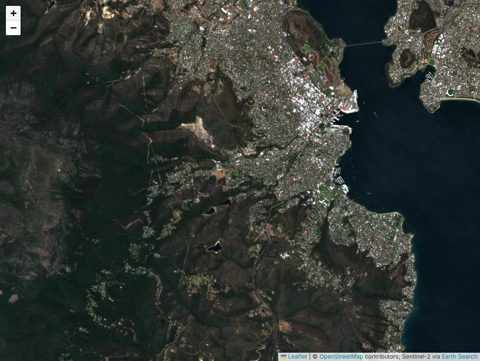
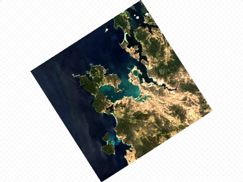

wxylib in the browser
Examples of wxylib compiled to WebAssembly. Each one reads Cloud Optimized GeoTIFFs with
range requests (wxy-tiff) and warps them onto the screen's own grid (wxy-warp),
with the same code the wxy command runs: rendering is warping to a screen grid.

Sentinel-2 on a web map
Search Earth Search STAC for the view, then warp raw uint16 bands live onto the map, one scene or a whole solar day, block by block from the centre out. Band sets and a stretch you can drag.

One COG, any projection
Open any CORS-enabled COG and pan and zoom it in polar stereographic, Mollweide, geostationary and more. Every view is a fresh warp, reading the overview gdalwarp would.
More of wxylib
- Start here: what works today and how to get involved
- wxylib/core: the Rust crates and the
wxycommand - wxylib/design: design documents and roadmap
- wxylib/web: the source of these pages